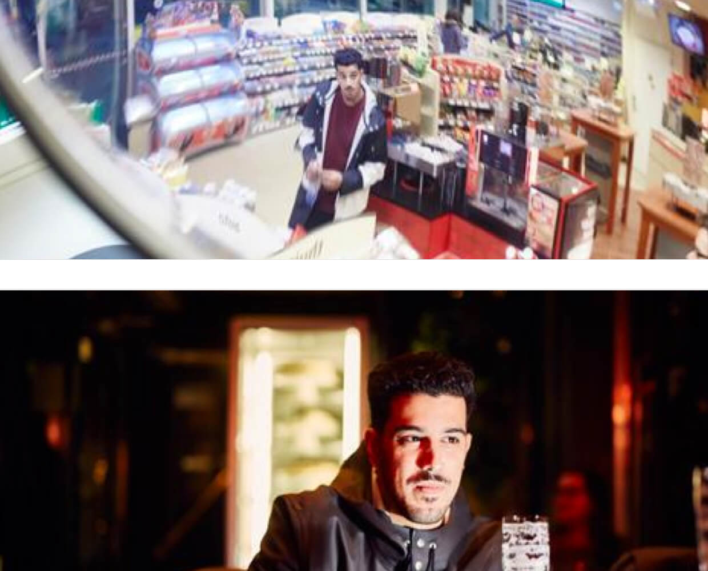

Amsterdam is deze week het episch centrum van de dancewereld. Meer dan tweeduizend artiesten breken in vijf dagen en nachten de tent af op 350 locaties. Amsterdam Dance Event is hét grootste clubfestival voor elektronische muziek. Elias Mazian (26) draait er voor de derde keer.
Tekst Nick Klaessens
Elias Mazian is een Amsterdamse dj met Amersfoortse Mocro-roots, die het beste jaar uit zijn carrière tot nu toe beleeft. Zijn naam prijkte onder veel meer op de posters van Mysteryland, Awakenings, Loveland en samen met zijn maten Job Jobse en Luc Mastenbroek had hij het belangrijkste dj-slot op Lowlands: de zaterdagnacht in de X-Ray. ‘Sick jongen, wat daar gebeurde,’ glundert hij zijn onderkaak bijna uit de kom. We zitten in een geleende auto, waarin we hem van Amsterdam naar Maastricht (en terug) brengen voor een set op technofeest Claydrum Indoor. ‘We’ zijn fotograaf Milan en schrijver Nick, en vanaf hier is het ieder voor zich in de flarden van deze nachtelijke roadtrip.
Amsterdam is deze week het episch centrum van de dancewereld. Meer dan tweeduizend artiesten breken in vijf dagen en nachten de tent af op 350 locaties. Amsterdam Dance Event is hét grootste clubfestival voor elektronische muziek. Elias Mazian (26) draait er voor de derde keer.
Tekst Nick Klaessens
Elias Mazian is een Amsterdamse dj met Amersfoortse Mocro-roots, die het beste jaar uit zijn carrière tot nu toe beleeft. Zijn naam prijkte onder veel meer op de posters van Mysteryland, Awakenings, Loveland en samen met zijn maten Job Jobse en Luc Mastenbroek had hij het belangrijkste dj-slot op Lowlands: de zaterdagnacht in de X-Ray. ‘Sick jongen, wat daar gebeurde,’ glundert hij zijn onderkaak bijna uit de kom. We zitten in een geleende auto, waarin we hem van Amsterdam naar Maastricht (en terug) brengen voor een set op technofeest Claydrum Indoor. ‘We’ zijn fotograaf Milan en schrijver Nick, en vanaf hier is het ieder voor zich in de flarden van deze nachtelijke roadtrip.
20.25 UUR
‘Eerder dit jaar draaide ik ook al op dit feest. Toen wist ik niet echt waar ik naartoe ging. In m’n eentje met de trein naar Maastricht op een regenachtige dag. Hotelletje geboekt, niks aan de hand, alles prima.
Fotografie Milan Vermeulen
Behalve dan dat ik die week een tasje met usb-sticks vol muziek kwijtraakte. Dus ik ging met een nieuwe usb daarheen en heb uiteindelijk vooral veel platen gedraaid. Spannend, maar het pakte goed uit. Ik eindigde met wat lieve discoplaten, stonden er vooraan ineens allemaal zweterige gasten zonder shirtje. Ik dacht echt what the fuck, maar blijkbaar vonden ze het zo vet dat ik meteen weer mag komen nu. Hey, we gaan zo wel een broodje bal halen, toch?’ In koor: ‘Zeker!’ Elias:‘Sick dat jullie ook down zijn voor een truckersbal.’ ‘Jammer dat we niet richting Breda gaan,’ riposteert Milan vanaf de achterbank. ‘Langs de A27 zit de koning der tankstations. Daar hebben ze cowboyvlees met piripiri-saus.’ Elias: ‘Holy shit.’
20.45 UUR
Wijsheid is weten waar je een goeie gehaktbal scoort. Milan is de enige met een auto: ‘Qua bal maakt het niet zoveel uit welk tankstation je hebt.’ ‘Laten we in elk geval snél wat eten,’ oppert Elias. Ik: ‘Hier is de BP, is dat wat?’ ‘Vooral het broodje Surinaamse kip,’ aldus de kenner, ‘maar die zullen ze nu niet meer hebben.’ Elias: ‘Nee, we gaan voor de truckersbal.’
21.05 UUR
De trucker’s delight wordt unaniem gerecenseerd als ‘Fakking lekker, ouwe’. Props voor de BP. Nu moet er gas op die lollie. Stipt om middernacht moet Elias immers draaien en er zijn nog zo’n 170 kilometers stuk te slaan. De knoppenspecialisten ontfermen zich over de soundtrack van deze trip. Eerst moet er geluisterd worden naar een fé- nomenale dj-set van de Detroitse deephouse-legende Theo Parrish, ‘om er alvast een beetje in te komen’. Althans, dat was de bedoeling. Uit de autospeakers klinkt op volume 11 de laatste track die Elias op zijn iPhone luisterde: Hoog/Laag van Ronnie Flex, Lil’ Kleine en een paar anderen.
Fotografie Milan Vermeulen
‘Ik vind die shit keihard, jongen,’ roept de snelweg-dj boven de muziek uit. ‘Youth is the truth, daar geloof ik echt in. Hoewel ik ze niet zo goed vond op Lowlands, dat hele New Wave. Maar misschien lag dat ook een beetje aan mezelf, ik had maar een uur geslapen.’ ‘Zij waarschijnlijk ook,’ opper ik. ‘Haha, dat zit er dik in ja. Een van mijn hoogtepunten op Lowlands was vrijdagochtend, toen werd ik wakker van Karlijn, een meisje dat in ons tentenkamp sliep. Blond, klein meisje met blauwe ogen. Super-Nederlands in elk geval. Vanuit haar dichtgeritste tent klonk het met zo’n lief stemmetje Broertje, ik heb veel bitches ontmoet in deze shit… Die hele tekst van voor tot achter, zo chill.’
EVEN LATER
‘In 2013 ben ik pas echt house gaan draaien. Daarvoor was ik hiphop-dj, en heb ik met Hef (rapper, red.) getoerd. Naar alle uithoeken van Nederland ben ik geweest om beats voor hem te droppen. Van Paradiso tot Coevorden. Veel geleerd, vooral om lange nachten te maken. Ik was 20 en had zoiets van let’s go. Ik keek op naar Hef, dus ik twijfelde geen moment toen hij tijdens een etentje met Jiggy Djé aan me vroeg: Yo, ik zit zonder dj, zou je voor mij willen draaien? Uiteindelijk heb ik het anderhalf jaar gedaan.’
Fotografie Milan Vermeulen
Was dat bluf of wist je dat het goed zou gaan? ‘Allebei. Ik kon wel draaien, maar op die manier had ik het nog niet echt gedaan. Thuis had ik toen nog geen draaitafels, dus ik kon eigenlijk alleen beter worden naarmate ik meer shows had.’ Hoe kwam die bekering tot house tot stand? ‘Doordat ik naar Amsterdam verhuisde in 2011. Daar heb ik een poosje gestudeerd en ben ik anderhalf jaar lang superveel wezen stappen. Gezocht naar wat ik tof vond. Housemuziek trok me sowieso wel, maar ik was nog op zoek naar een eigen sound. Ik gunde mezelf de tijd om die te vinden.’ Waar ging je uit? ‘Studio 80, Trouw, Club Up. Ik weet nog dat ik voor het eerst naar Bitterzoet ging. FS Green was aan het draaien met Full Crate. Er kwam een A Tribe Called Quest-plaat voorbij en ik zag gewoon meisjes mee-rappen. Dat had je niet in Amersfoort: mensen met een voorliefde voor de betere hiphop die daar élke week op getrakteerd werden in de club.’
HOUD LINKS AAN BIJ DE SPLITSING EN DAN RECHTDOOR
‘Haha, over splitsing gesproken. Ik had wel twee jaar nodig voordat ik mezelf durfde te presenteren als de house-Elias. Wat niet wil zeggen dat ik tegenwoordig geen hiphop meer draai. Als ik er lekker inzit, wil ik nog weleens een D’Angelo-plaat draaien.’ Een beetje afwisseling is wel zo fijn, ja. ‘Ik kan niet anders. Mijn dj’en reflecteert mijn geest. Ik ben een soort ADDdj: warrig en all over the place met mijn gedachten. Ik vind het geweldig om tien uur lang naar Ben Klock in de Berghain te luisteren, maar als ik zélf drie dezelfde soort platen draai, ben ik al verveeld. En laat het nu nét de tijd zijn van verveelde jongeren.’ Je schopte het vrij snel tot resident-dj van Trouw. ‘Een van de eerste keren dat ik daar was, voelde ik dat. Hoe sick zou het zijn als ik hier mag draaien? Zo’n magische plek.’ Wanneer was je eerste keer? ‘20 september 2013.’ Haha. ‘Ik weet nog dat ik het mailtje kreeg. Toen was ik net gestopt met mijn studie en werkte ik bij de Postcodeloterij. Die set was een culminatie van al mijn dj-dromen.’ Milan: ‘Zullen we zo even pissen?’ 22.25 UUR ‘Koop nou maar gewoon die nieuwe PES,’ beveelt Milan, die ook ineens bekeerd blijkt. Elias: ‘Nee man, ik ben een FIFA-jongen. Het is toch veel leuker om vrienden in te maken? Zo’n lekker gevoel als je online een gastje afmaakt en dat-ie na de 4-0 de verbinding verbreekt.’ Haha ja. ‘Ik speel ál-tijd met Real Madrid en dan zet ik Cristiano Ronaldo áchter de spits. Benzema in de punt en Gareth Bale op links en dan vlammen. Oh wacht, m’n vriendin stuurt me een mop...’ Hahaha. ‘Komt een cowboy bij de kapper… En wat denk je?’ Nou? ‘Pony weg.’ Jiskefetiaans met z’n drieën: ‘Ghegheghe.’ ‘Ze zit alleen aan de bar.’
Fotografie Milan Vermeulen
Bijna jammer dat je niet in Keulen hoeft te draaien. Elias: ‘Ja, goeie automuziek, hè. Het vette hiervan is dat je hoort dat het onderweg is naar house, maar ook dat het nog niet daar is. Veel speelser, nog niet in een stramien. Je hoort de foutjes en dat ze dingen aan het uitproberen zijn in de studio. En je hoort voorál dat ze heel veel cocaïne aan het snuiven zijn.’ Haha. Milan: ‘Ik zie een paar gasten in Hawaï-bloezen voor me, die sigaren roken in een studio. Ik zoek nog een trommelaar, kan er iemand trommelen?!’ Elias: ‘Jaaaa.’ Milan: ‘Ga jij maar trommelen!’ Elias: ‘Jaa.’ Milan: ‘We hebben een hit jongens, ik voel het, doe ook maar een fluitje!’ Elias: ‘Jaaa.’
23.45 UUR
Bij de ingang van de Muziekgieterij staat een lange rij, we worden opgehaald door een knappe Mestreechse in een wit bloesje en leren rokje: ‘Hoi, ik ben Celeste. Jij komt draaien? Kom, dan breng ik jullie even naar de beksteetsj.’ Klinkt toch gezelliger in het zuiden.
Fotografie Milan VermeulenFotografie Milan Vermeulen
00.34 UUR
Er staat al tien minuten een niet-geïdentificeerd blond object in de djbooth te hupsen. In naveltruitje, uit de maat, met een biertje links en een peuk rechts. Zou dit het meisje zijn dat eerder deze week op de Facebook-eventpagina aankondigde Elias ten huwelijk te gaan vragen? ‘Nee hihi, geen foto,’ zegt ze quasi-verlegen. En dan nadat ze de foto gezien heeft: ‘Doe maar effe oppenieuw ene maken.’ En dan, knikkend richting Elias: ‘Is hij nog vrijgezel, of wa?’ Zijn vriendin whatsappte hem net nog een mop, dus denk van niet.
00.37 UUR
Silent fade-away van Blondie.
01.18 UUR
Elias staat constant met elastieken benen achter de decks te dansen, z’n handen minutieus aan knoppen draaiend, een Lucky Strike op half zeven in de mondhoek en dan sléúrt-ie het publiek aan de haren mee naar de climax. Dat is zo’n moment dat-ie met van die Luis-Suarez-als-die-gescoord-heeft-pistooltjes in de lucht schiet.